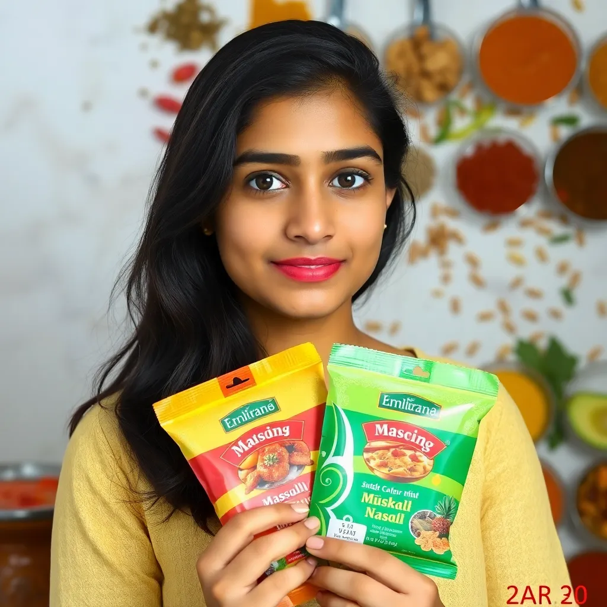

What Our Customers Say
Authentic homemade masala blends that bring the taste of India to your kitchen
The homemade garam masala changed my cooking completely. The aroma fills my kitchen just like my grandmother's used to!

As a professional chef, I'm very particular about spices. Their chaat masala has the perfect balance of tangy and spicy flavors.


The sambar powder is exceptional! It gives that authentic South Indian taste I've been searching for abroad.